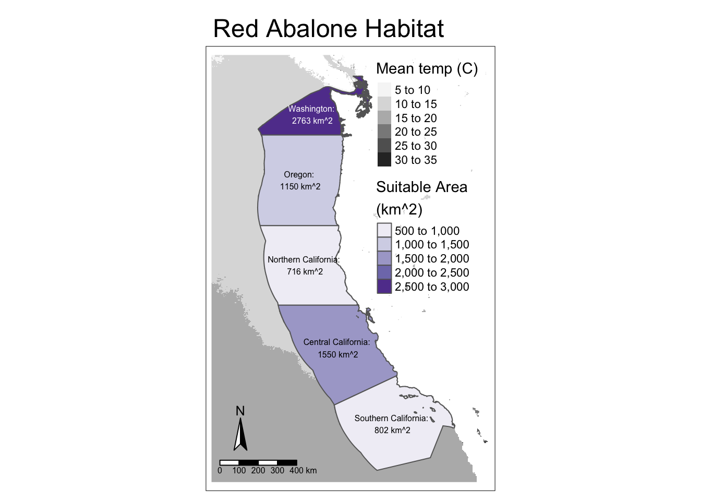

Expand code
library(here)
library(tidyverse)
library(sf)
library(tmap)
library(dplyr)
library(kableExtra)
library(terra)
library(patchwork)
library(tmaptools)Prioritizing potential aquaculture
library(here)
library(tidyverse)
library(sf)
library(tmap)
library(dplyr)
library(kableExtra)
library(terra)
library(patchwork)
library(tmaptools)# Read in EEZ data
west_coast_eez <- read_sf(here::here("data", "wc_regions_clean.shp"))
# Read in and rasterize bathymetry data
bathymetry <- stars::read_stars(here::here("data", "depth.tif"))
bathymetry <- rast(bathymetry)
# Read in and rasterize sst data
sst_rasters <- list.files(here("data"), pattern = glob2rx("average_annual*"), full.names = TRUE)
for (i in seq_along(sst_rasters)) {
raster <- stars::read_stars(sst_rasters[i])
raster <- rast(raster)
raster_name <- paste0("sst", str_sub(sst_rasters[i], -9 ,-5))
if (st_crs(west_coast_eez) == st_crs(raster)) {
print("The CRS match! Good to go.")
} else {
raster <- project(raster, crs(west_coast_eez))
}
try(if(st_crs(west_coast_eez) != st_crs(raster)) stop("CRS doesn't match."))
assign(raster_name, raster)
}
# Stack SST rasters
sst <- c(sst_2008, sst_2009, sst_2010, sst_2011, sst_2012)
# Find mean SST
avg_sst <- mean(sst, na.rm = TRUE)
# Convert from K to C
avg_sst <- avg_sst - 273.15
# Clip bathymetry to same extent as SST
depth <- bathymetry[avg_sst, drop = FALSE]
# Resample depth to match SST resolution
depth_resample <- terra::resample(depth, y = avg_sst, method = "near")
# SST and depth rasters
stack <- c(sst, depth_resample)The function suitability() takes the following arguments:
species_name: the name of the species as a string
min_temp: minimum sea surface temperature (degrees Celsius)
max_temp: maximum sea surface temperature (degrees Celsius)
min_depth: the absolute value of the shallowest depth (meters)
max_depth: the absolute value of the deepest depth (meters)
It produces a map of EEZ regions colored by amount of area associated with suitable growing conditions for the species of interest.
suitability <- function(species_name, min_temp, max_temp, min_depth, max_depth) {
species_name = species_name
# Suitable temperatures
rcl_temp <- matrix(c(-Inf, min_temp, 0, # min, max, group
min_temp, max_temp, 1,
max_temp, Inf, 0),
ncol = 3, byrow = TRUE)
sst_suitable <- terra::classify(avg_sst, rcl = rcl_temp)
# Suitable depths
rcl_depth <- matrix(c(-Inf, -max_depth, 0, # min, max, group
-max_depth, -min_depth, 1,
-min_depth, Inf, 0),
ncol = 3, byrow = TRUE)
depth_suitable <- terra::classify(depth_resample, rcl = rcl_depth)
# Apply function (raster multiplication) to SST and depth stack
fun <- function(x,y){return(x*y)}
stack <- c(sst_suitable, depth_suitable)
suitable_raster <- lapp(stack, fun)
# Replace 0 values with NA
suitable_raster[suitable_raster == 0] <- NA
# Find suitable area masked to US EEZ extent
suitable_raster <- mask(suitable_raster, west_coast_eez)
# Rasterize the EEZ
eez_raster <- rasterize(west_coast_eez, stack, "rgn")
# Find the size of each cell in suitable_raster
cell_size <- cellSize(suitable_raster, unit = "km")
# Create a dataframe for total suitable area for each EEZ
area <- data.frame((zonal(cell_size*suitable_raster,
z = eez_raster,
fun ="sum",
na.rm = TRUE)))
# Create geo-dataframe to map
map_df <- left_join(west_coast_eez, area, by = 'rgn') %>%
select('rgn', 'area', 'area_km2') %>%
mutate(area_rounded = round(area),
Percent = round(area/area_km2*100, 2)) %>%
mutate(labels = paste0(rgn, ": ", "\n", area_rounded, " km^2"))
# Create suitability table
suitability_table <- map_df %>%
st_drop_geometry() %>%
select(rgn, area_rounded, area_km2, Percent) %>%
rename(Region = rgn,
"Suitable Area (km^2)" = area_rounded,
"Total Area (km^2)" = area_km2) %>%
kbl() %>%
kable_styling()
table_name <- paste0(str_replace(species_name, " ", "_"), "_table")
assign(table_name, suitability_table)
# Map suitable region
suitability_map <- tm_shape(avg_sst) +
tm_raster(palette = "Greys",
title = "Mean SST") +
tm_shape(map_df) +
tm_polygons(title = "EEZ Region",
col = 'area_rounded',
palette = "Purples",
legend.show = FALSE) +
tm_text("labels", size = 1/2) +
tm_layout(main.title = paste(species_name, "Suitability"),
legend.position = c("right", "top"),
bg.color = "white",
legend.outside = FALSE) +
tm_compass(position = c("left", "bottom")) +
tm_scale_bar(position = c("left", "bottom"))
map_name <- paste0(species_name, "_map")
assign(map_name, suitability_map)
# Save outputs
return(suitability_map)
}
suitability("Oyster", 11, 30, 0, 70)suitability("Abalone", 8, 18, 0, 24) 